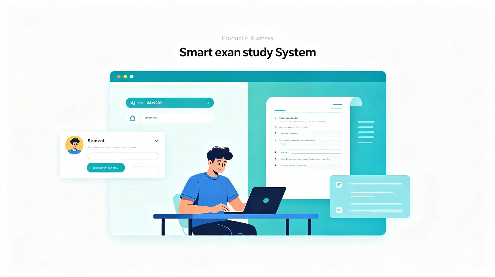
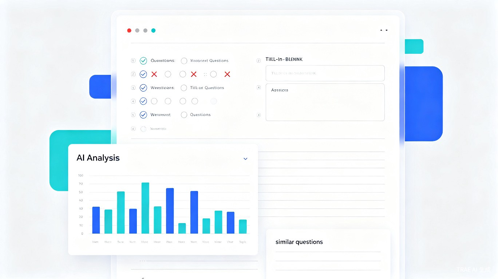

AI驱动的智能考试训练系统 —— 上传资料，一键生成专属试卷，错题举一反三，让复习效率翻倍

大学生期末复习时，找不到与学校课程匹配的练习题，市面上的题库往往与学校考试内容脱节；中小学生面对海量题库，缺乏针对性训练，错题重复犯，知识点掌握不牢固。
我自己在期末复习时，经常遇到老师不给往年试卷、网上找不到匹配题库的情况。于是我想到：让AI根据学生自己提供的考试内容生成专属试卷，这样无论哪个学校、哪门课程，都能获得精准的训练材料。
一款面向大学生和中小学生的Web端智能考试训练系统（同时支持小程序形态），支持两种模式：上传已有试卷自动解析生成在线考试，或通过AI对话输入考试内容自动生成试卷。
期末复习阶段，需要针对本校课程进行专项训练
日常学习和考前冲刺，需要针对性练习
模式A - 上传解析：支持上传Markdown格式试卷、PDF、Word文档，系统自动解析题目结构，生成标准在线考试。
模式B - AI对话生成：学生通过自然语言描述考试范围、知识点、难度要求，AI自动生成完整试卷并导出为Markdown。

模拟真实考试环境，支持选择题、填空题、简答题等多种题型。计时交卷、自动保存答题进度，还原真实考试体验。
交卷后系统自动批改客观题，AI辅助批改主观题。生成详细的成绩报告，包括：
针对每道错题，AI不仅给出详细解析，还会自动生成3-5道同类变式题，帮助学生从"会做一道题"提升到"掌握一类题"。
完整保存每次考试记录，生成个人能力雷达图，追踪知识点掌握趋势，让进步看得见。
传统复习方式：找题2小时，做题30分钟。使用考霸AI：5分钟生成专属试卷，复习时间利用率提升10倍以上。AI自动批改省去对答案时间，即时反馈加速学习闭环。
降低优质教育资源的获取门槛，让偏远地区学生也能获得个性化的精准训练。通过"举一反三"功能，培养学生举一反三的思维能力，而非机械刷题。
| 功能 | 考霸AI | 传统题库App | 通用AI对话 |
|---|---|---|---|
| 个性化试卷生成 | ✓ 支持上传+AI生成 | ✗ 固定题库 | △ 需手动组织 |
| 在线考试体验 | ✓ 完整考试系统 | △ 简单答题 | ✗ 无此功能 |
| 智能错题分析 | ✓ 详细报告 | △ 基础统计 | ✗ 无此功能 |
| 举一反三 | ✓ AI自动生成变式题 | ✗ 无此功能 | △ 需手动请求 |
| 考试记录追踪 | ✓ 完整历史+成长曲线 | △ 部分支持 | ✗ 无此功能 |